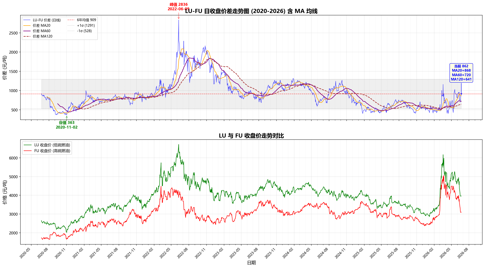

美伊谈判破裂引发战略级对峙，伊朗以主权名义关闭霍尔木兹海峡——近40年首次。全球约20%石油供应通道被掐断。
布伦特原油在五周内从 $70 → $111/桶（+58%）；WTI暴涨9.72%至$95.73；3月12日布伦特突破$100关口。
美国3-2-1裂解价差飙至 $55.78/桶（正常区间$10-20，近3倍）；柴油裂解$87.02/桶；新加坡综合炼油利润升至近$30/桶（近四年高点）。亚洲成品油涨幅达原油涨幅的1.5-3倍，航空燃油裂解价差飙至$80-100/桶。
IEA月报：假设霍尔木兹海峡从6月逐步恢复，2026年全球石油供应平均下降 390万桶/日。5月OPEC产量仅1,883万桶/日（5年同期低位）。
启动最终协议谈判，核心要点：确保海峡开放、允许伊朗石油销售、解冻伊朗资产。
WTI 6月16日单日暴跌5.8%至$76.05/桶，刷新3月初以来新低。美国发布60天伊朗石油制裁豁免，3艘超级油轮（600万桶）穿越海峡驶向新加坡——自2月28日以来最大规模。布伦特跌至$77.90（已回到战前水平）。
谈判仍在推进，力争60天内达成最终协议。但核心议题（核、浓缩铀处置）尚未触及。协调中心与冲突降级小组已设立。市场从极端恐惧切换为极端乐观，油价已回到战前，但成品油裂解价差与实物供应紧张仍未消散。
布伦特已从$111跌回$78（完全回到战前），但精炼产品市场远未恢复正常。
实物端真实紧张：低硫燃料油调和组分持续短缺、海外汽柴油结构性矛盾未解、亚洲高硫油供应紧+夏季发电需求。新加坡综合炼油利润仍高于正常水平。
金融端过度定价和平：市场赌注60天制裁豁免 → 伊朗全面回归 → 供应过剩。但IEA预测全年供应仍降390万桶/日，伊朗最多恢复150-200万桶/日，缺口仍在。
这就是裂解价差背离的根源：原油价格被金融空头压着走，但实物产品市场在用真金白银投票——价格就是不跟原油跌。
裂解价差从极端值回落是正常的（海峡重开预期），但回落速度与原油下跌速度不对称。
原油从高点跌了30%（$111→$78），但成品油裂解价差仅从$55→$25（跌了55%），绝对值仍高于$10-20的正常区间。
这意味着：如果伊朗供应回归不如预期顺利，或者实物成品油紧张持续，裂解价差随时可能再次扩大——而做空原油的金融头寸将面临双重夹击。
| 价差类型 | 含义 | 当前水平 | 历史正常区间 | 状态 | 驱动因素 |
|---|---|---|---|---|---|
| 3-2-1裂解价差 | 3桶原油→2桶汽油+1桶柴油 | ~$25-30/桶 | $10-20/桶 | 偏高但回落 | 从$55极端值回落，仍高于正常 |
| 柴油裂解 | 柴油-原油价差 | ~$35/桶 | $15-25/桶 | 偏高 | 馏分油全球结构性短缺 |
| 汽油裂解 | 汽油-原油价差 | ~$20/桶 | $10-18/桶 | 偏高 | 夏季驾驶旺季支撑 |
| LU-SC价差 | 国内低硫燃油-上海原油 | +206元/吨 | +50~150 | 偏高 | 调和组分短缺+船燃升级需求 |
| LU-FU价差 | 低硫-高硫燃料油 | 862元/吨 | 400-700 | 高位 | LU供应更紧，FU有伊朗增量预期 |
| 新加坡综合利润 | 亚洲炼厂综合裂解利润 | ~$10-15/桶 | $5-10/桶 | 偏高 | 从$30极端值回落 |
LU-FU正常区间在400-700元/吨，当前862元已突破正常上限。
为什么这么高？
1. LU端：低硫调和组分（VLSFO调油料）全球短缺。战争期间全球炼厂最大化汽油/柴油产出，低硫调油料被挤占 → 供应持续收紧
2. FU端：伊朗是中东高硫燃料油的重要出口国。60天豁免 → 伊朗高硫油出海预期 → FU相对承压
3. 结构矛盾：即使海峡重开，炼厂产品结构调整需要时间（3-6个月），LU供应短缺可能持续到Q4
光大期货核心观点："海外汽柴油结构性矛盾尚未缓解，低硫供应端的支撑更为明显，LU-FU价差有望维持高位"

📈 LU-FU日收盘价差走势图（2020-2026）与LU/FU收盘价走势对比
| 维度 | 指标 | 最新数据 | 变化方向 |
|---|---|---|---|
| 原油供应 | 5月OPEC产量 | 1,882.9万桶/日 | 5年同期低位 |
| 美国原油产量 | 1,380.6万桶/日 | 环比+0.1% | |
| 美国钻井数 | 433台 | 环比+2台 | |
| 原油库存 | EIA商业原油 | 4.182亿桶 | ↓826万桶（去库） |
| 库欣库存 | 2,003.4万桶 | ↓160.6万桶 | |
| 中国港口库容率 | 53.02% | 周↓2.06个百分点 | |
| 炼厂开工 | 主营炼厂常减压 | 67.23% | 同比-12.6% |
| 独立炼厂常减压 | 43.47% | 环比-2个百分点 | |
| 美国炼厂利用率 | 92-95% | 接近上限 | |
| 燃料油库存 | 山东油浆库存率 | 15.3% | ↑0.3% |
| 山东渣油库存率 | 2.8% | ↓3.6%（极低） | |
| 山东蜡油库存率 | 0.7% | ↑0.1%（极低） |
1. 全球原油库存仍在快速去化：EIA商业库存周降826万桶，中国港口库容率降至53%，说明实物供应并未过剩
2. 中国炼厂开工极低：主营67%、独立43%——历史低位，这不是利润驱动的结果，而是原料可得性问题（进口原油到港受战争+制裁扰动）
3. 燃料油库存极低：山东渣油库存仅2.8%，蜡油0.7%——实物端极度紧张
4. 去库存 + 低开工 ≠ 供应过剩：期货价格在交易"未来伊朗供应回归"，但现货市场在反映"现在货不够"
触发条件：60天谈判触及核议题时破裂，海峡再次封锁
SC2608目标：600-650 元/桶
FU2609目标：3,500-3,800 元/吨
LU2608目标：4,500-5,000 元/吨
LU-FU价差：900-1,200 元/吨
核心逻辑：实物裂解价差急速扩大+原油空头恐慌回补
触发条件：60天框架协议达成但执行需3-6个月，伊朗产量渐进回归
SC2608目标：480-520 元/桶（宽幅震荡）
FU2609目标：2,900-3,200 元/吨
LU2608目标：3,800-4,100 元/吨
LU-FU价差：700-900 元/吨（维持高位）
核心逻辑：原油承压但下方有去库支撑；LU供应短缺需要时间缓解
触发条件：60天达成全面协议，伊朗1,500-2,000万桶浮仓集中释放
SC2608目标：430-460 元/桶
FU2609目标：2,600-2,800 元/吨
LU2608目标：3,500-3,700 元/吨
LU-FU价差：500-700 元/吨（收窄）
核心逻辑：全线崩溃，但LU-FU价差即使收窄也难跌破500
| 策略 | 逻辑 | 具体操作 |
|---|---|---|
| 多LU空FU （核心推荐） |
LU供应短缺（调和组分缺乏）具有持续性（3-6个月），伊朗高硫油回归利空FU。裂解价差背离的核心受益品种。 | 多LU2608 / 空FU2609 入场LU-FU价差800-850 目标1,000+ 止损750 |
| 多LU空SC | 成品油实物紧张 vs 原油金融空头压制。如果海峡问题反复，LU上行弹性远大于SC。 | 做多LU-SC裂解价差 当前+206元/吨 目标+350-500 止损+120 |
| SC区间操作 | 500附近是强支撑（去库+低开工），但上方受伊朗协议压制。宽幅震荡格局。 | 480-500区间轻仓试多 止损470 目标530-550 |
| 等待右侧做多LU | 如果伊朗协议推进顺利但LU供应矛盾持续，LU相对SC将表现出超强韧性。等原油企稳后做多LU。 | 观察SC是否在480-500企稳 企稳后做多LU2608/LU2609 止损3,700 目标4,300-4,500 |
| 风险对冲：多SC空FU | 极端情况下如果伊朗供应大量涌入，高硫燃料油首当其冲（伊朗是高硫主要出口国） | 作为LU-FU多头的对冲 SC-FU价差当前-566 目标-300~-200 |